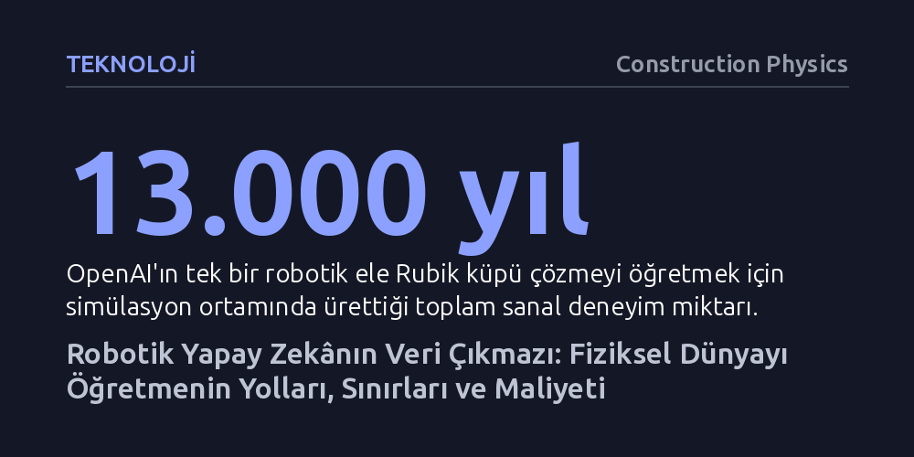

TEKNOLOJI · Construction Physics · 2026-10-16
Büyük dil modellerini hızla geliştiren devasa metin havuzlarının aksine, robotik yapay zekânın gerçek dünyada kullanabileceği hazır bir veri stoku bulunmuyor. Simülasyon, uzaktan kumanda ve insan videolarıyla veri üretilmeye çalışılsa da robotları üstün yetkinliğe ulaştırmak 10 ila 100 milyar dolarlık veri yatırımı gerektirebilir.
Yapay zekânın fiziksel dünyayı dönüştürmesinin önündeki asıl engelin işlemci gücü ya da model mimarisi değil, robotların hata payı kabul etmeyen gerçek dünyadan toplayabildiği nitelikli verinin kıtlığı olduğunu gösteriyor.

Büyük dil modellerinin son yıllarda sergilediği baş döndürücü gelişimin ardında ölçekleme hipotezi yatıyor: Hesaplama gücü ve eğitim verisi büyüdükçe, yapay zekânın yetenekleri öngörülebilir bir biçimde sıçrama yapıyor. GPT-3 gibi modeller internetten derlenen yüz milyarlarca kelimelik veriyle eğitildi; dünyadaki kaliteli metin varlığının ise yüz trilyonlarca tokene ulaştığı tahmin ediliyor. Ancak yapay zekâyı ekranlardan çıkarıp fiziksel bir robot gövdesine yerleştirmek istediğimizde bu hazır kütüphane tamamen ortadan kayboluyor.
Robotik modelleri eğitmek, dil modellerinde olduğu gibi binlerce doğru hareket örneğini inceleyip model parametrelerini buna göre ayarlamayı gerektiriyor. Fakat internette bir sonraki kelimeyi tahmin ettirecek sınırsız metin bulunurken; bir robotun tişört katlamasını, bardaktan su doldurmasını veya kapı açmasını sağlayacak açık, standart bir eylem arşivi mevcut değil. Modern robotik çalışmalarının kaderi, bu fiziksel hareket verisinin nereden ve nasıl üretileceği sorusunda kilitlenmiş durumda.
Bugüne kadar robot verisi üretmenin en güvenilir yolu teleoperasyon, yani bir insanın robotu kumandalar veya kask aparatlarıyla bizzat yönlendirmesi oldu. Bu yöntemin en büyük üstünlüğü, toplanan verinin doğrudan hedef robotun mekanik sınırlarına ve motor kapasitesine birebir uymasıdır. Bu nedenle günümüzde onlarca insanın gün boyu robot kolları kontrol ederek veri ürettiği özel veri toplama fabrikaları faaliyet gösteriyor.
Ne var ki teleoperasyon hem olağanüstü pahalı hem de ölçeklenmesi son derece güç bir yöntem. Robotu yöneten insan nesnelere dokunduğunda gerçek bir dokunsal geri bildirim alamadığı için hassas el hareketlerini taklit etmek zorlaşıyor. Üstelik toplanan devasa teleoperasyon kayıtlarının yalnızca küçük bir kısmı model eğitimine uygun nitelikte çıkıyor.
Bir diğer yaklaşım ise robotların gerçek dünyada kendi başlarına hareket edip eylemlerini pekiştirmeli öğrenmeyle puanlaması. Uzun vadede amaç, sahadaki robotlardan gelen verilerle modellerin geliştirildiği, gelişen modellerle daha çok robotun sahaya sürüldüğü bir 'veri volanı' kurmak. Ancak bugün gerçek iş ortamlarında çalışan yapay zekâlı robot sayısı bir elin parmaklarını geçmiyor ve bu robotların ürettiği veriler de aşırı derecede tekdüze kalıyor.
Fiziksel bir robotu gerçek hayatta çalıştırmanın getirdiği yüksek maliyet ve zaman kaybı, araştırmacıları simülasyona yönlendiriyor. Dijital bir evrende binlerce sanal robotu eşzamanlı çalıştırmak son derece ucuz ve hızlı bir veri akışı sağlıyor. Nitekim Figure AI insansı robotuna yürümeyi simülasyondaki binlerce robotla öğretti; Waymo milyarlarca millik sürüş deneyimini sanal ortamda elde etti; OpenAI ise bir robot ele Rubik küpü çözmeyi 13 bin yıllık sanal deneyimle kazandırdı.
Fakat simülasyonun önünde 'gerçeklik açığı' (sim-to-real gap) adı verilen dev bir bariyer var. Gerçek dünyadaki sürtünme katsayıları, nesnelerin esnekliği ve temas dinamikleri sanal ortamda kusursuz modellenemiyor. OpenAI'ın ortamı sürekli rastgele zorlaştıran Otomatik Alan Rastgeleleştirmesi (ADR) tekniğine rağmen, Rubik küpünün en zor başlangıç dizilimlerindeki başarı oranı yalnızca yüzde 20'de kaldı. Simülasyon yürüme gibi genel hareketlerde başarı sağlasa da parmakların hassas manipülasyonunda gerçek dünyanın fizik kurallarına takılıyor.
Son dönemin en dikkat çekici atılımı, veriyi pahalı robotlardan değil doğrudan insanlardan toplamak oldu. İnsanların başlarına taktıkları kameralarla kaydettikleri birinci şahıs (egosentrik) ev işi videoları, yapay zekâ tarafından robot hareket kodlarına dönüştürülüyor. Figure AI ve Shift gibi girişimler insanlara bu kameralarla gündelik işlerini kaydettirerek büyük veri tabanları kuruyor. İnsansı robot tasarımlarının bu kadar öne çıkmasının temel sebeplerinden biri de insanların ürettiği bu video verilerinin en rahat insansı gövdelere uyarlanabilmesi.
Bu stratejinin daha hassas bir türevi ise UMI (Evrensel Manipülasyon Arayüzü) adı verilen el aparatları. İnsanlar uçlarında basit kıskaçlar ve kameralar bulunan bu tutamaçlarla gerçek nesneleri kavrayarak iş yapıyor. Bir robot satın almaktan katbekat ucuz olan bu yöntem, robotik modellerine gerçek dünyanın fiziksel temasını yüksek doğrulukla aktarabiliyor. Günümüzdeki en başarılı robotik gösterilerinin önemli bir bölümü bu UMI verileriyle eğitiliyor.
Robotik veri setleri saat bazında hızla büyüse de büyük dil modellerinin veri okyanusu yanında hala çok küçük kalıyor. Video kareleri token eşdeğerine dönüştürüldüğünde, günümüzün en büyük robot veri setlerinin bile son dil modellerinin eğitim verisinden yaklaşık 5 bin kat daha küçük olduğu görülüyor. Eğer insansı robotların genel beceriler kazanması için mevcut verinin bin katına, yani yaklaşık 1 milyar saatlik gerçek dünya kaydına ihtiyaç duyulursa, saatlik veri üretim maliyetleri üzerinden yapılacak kaba bir hesap 10 ila 100 milyar dolarlık muazzam bir fatura çıkarıyor.
Üstelik robotik fiziksel olarak metin üretmekten çok daha affedilmez bir alan. Bir cümlede yapılacak küçük bir harf ya da kelime hatası genel anlamı bozmazken, nesne tutarken yapılacak milimetrik bir konumlandırma hatası görevin bütünüyle hüsranla sonuçlanmasına yol açıyor. Robotik modellerinin az veriyle öğrenebilen yeni mimarilere mi kavuşacağı, yoksa fiziksel dünyanın yüksek boyutlu karmaşıklığı karşısında milyarlarca dolarlık devasa veri fabrikalarına mı mecbur kalacağı sorusu yapay zekânın geleceğini belirleyecek.